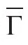
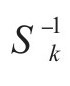

如果三维空间中的有限旋转群Γ*包含非真旋转，设A为其中的非真旋转之一，而S1，……，Sn为其中的真旋转，后者构成子群Γ，则Γ*包含下列两行元素，一行真旋转，一行非真旋转：
S1，……，Sn
（1）
AS1，……，ASn
（2）
除此之外没有其他元素。因为如果T是属于Γ*的一个非真旋转，则A-1T为真旋转，故必与第一行中的某个元素相同，比如说Si，因此就有，T=ASi。所以Γ*的阶数为2n，它的一半操作是构成群Γ的真旋转，而另一半是非真旋转。
根据非真操作Z是否属于Γ*，分情况来讨论。对于第一种情况，我们把Z取作A，从而有Γ*=

。对于第二种情况，我们可以把第二行写成如下形式：
ZT1，……，ZTn
（2'）
其中Ti为真旋转。但此时所有的Ti均不同于所有的Si。事实上，如果Ti=Sk，则群Γ*将包含ZTi=ZSk和Sk，以及元素（ZSk）

=Z，与假设相矛盾。在这些情况下，操作S1，……，Sn
T1，……，Tn
（3）
构成了一个2n阶的真旋转群Γ'，而Γ是其一个指数为2的子群。事实上，容易证明，（3）中的两行元素构成了一个群这一说法等价于说（1）和（2'）两行元素构成了一个群（即群Γ*）。这样一来，Γ*就是正文中的群Γ'Γ，于是我们就证明了，构造包含非真旋转的有限群的方法仅有正文提到的那两种。